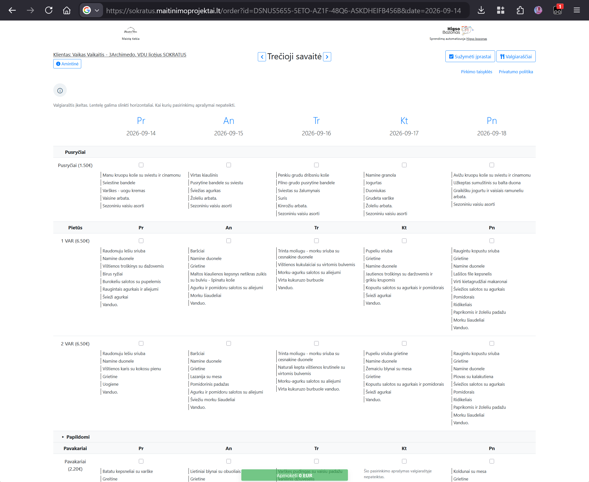
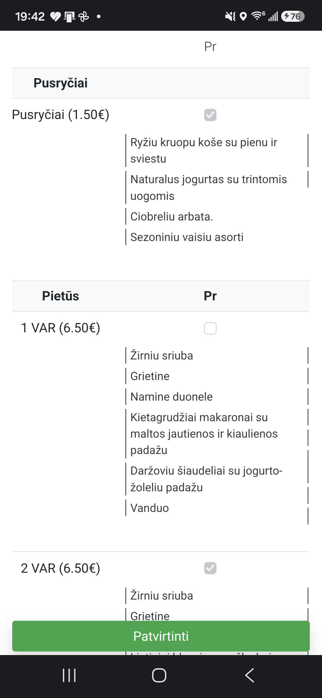

Jūsų patogumui nuo ChatGPT 🤖❤️
Sokratus meniu užsakymuose
Parodo savaitės valgiaraščio aprašymus tiesiai Sokratus maisto užsakymo lentelėje.
Įdiekite „Tampermonkey“
Įdiekite scenarijų
Įdiegę „Tampermonkey“, vieną kartą spustelėkite šią nuorodą ir patvirtinkite diegimą.
Įdiegti „Sokratus meniu“Svarbu: „Chrome“ ir „Edge“ gali paprašyti plėtinio nustatymuose įjungti „Allow User Scripts“ arba kūrėjo režimą. „iPhone“ ir „iPad“ įjunkite „Tampermonkey“ Safari plėtinių nustatymuose.
Scenarijuje nėra prisijungimo duomenų. Jis kreipiasi tik į atidarytos Sokratus svetainės meniu puslapį ir niekur kitur nesiunčia jūsų duomenų.
Kaip tai atrodo
Valgiaraštis rodomas po kiekvienu pasirinkimu kompiuteryje ir telefone.

